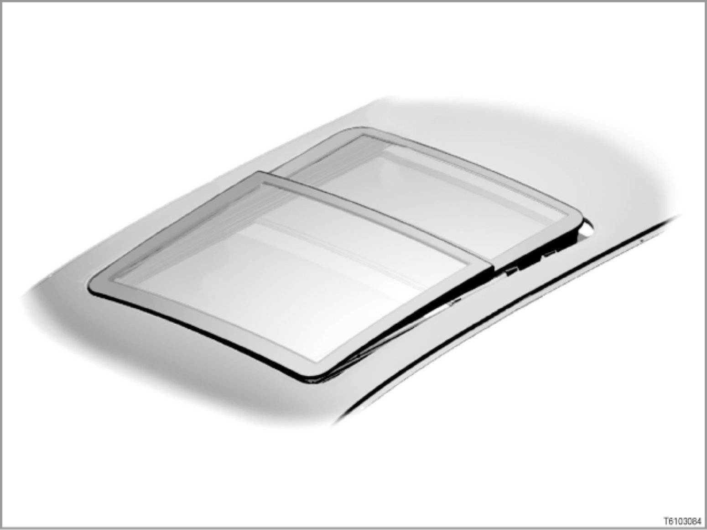

Panorama Glass Sunroof
61 12 03 (055)
Panorama glass sunroof
E53, E61, E70, E83, E91

Introduction
The fully automatic Panorama glass sunroof consists of 2 glass sunroofs and a 2-piece sliding visor. The front glass sunroof works like a sliding/tilting sunroof, the rear glass sunroof is a tilting glass sunroof. The Panorama glass sunroof is actuated in the usual way by its own control unit.
> - E53, E83 [system overview ...]
> - E61 [system overview ...]
> - E70 [system overview ...]
> - E91 [system overview ...]
The Panorama glass sunroof is available as special equipment (option 402).
Brief description of components
The following components supply the input signals for the Panorama glass sunroof:
- Panorama glass sunroof switch
The switch is located in the control unit in the roof console.
The switch can be moved in 3 directions (pushed forwards, pushed backwards, pushed upwards).
- Hall sensors in Panorama glass sunroof drive
There are 2 Hall sensors integrated in each of the two electric motors for the Panorama glass sunroof. The Hall sensors detect the motor speed. The signals are forwarded to the SHD control unit (E70: FZD control unit).
These signals enable the control unit to recognize the position of the two glass sunroofs and of the 2-piece sliding visor. Moreover, the closing speed of each electric motor is used to calculate the closing force for the two glass sunroofs and for the sliding visor.
The control units involved in the functions of the Panorama glass sunroof are as follows:
- SHD control unit (control unit for Panorama glass sunroof)
The SHD control unit controls all the electrical functions of the Panorama glass sunroof.
> E53, E61, E83, E91:
> E70:
The SHD control unit is no longer fitted. The function of the SHD control unit has been integrated into the FZD control unit.
- GM: General module 3 (E53) or general module 5 (E83)
The general module controls the convenience opening or closing function of the Panorama glass sunroof.
The general module evaluates the status of the Hall sensors from the door locking cylinders. When the vehicle is locked or unlocked with the mechanical key element, the general module will recognize this request.
The general module transmits the request (from the remote control, for example) as a message to the SHD control unit via the body bus.
- CAS: Car Access System (E61, E70, E91)
The CAS controls the convenience opening or closing function of the Panorama glass sunroof. The CAS forwards the request (from the remote control, for example) to the SHD control unit via the Body CAN (E70: FZD control unit).
- CA: Comfort Access
Option 322 "Comfort Access" allows convenience closing of the Panorama glass sunroof without actively using the ID transmitter.
[for further information, please refer to SI Technology (SBT) 66 04 04 093]
- LSZ: Light switch cluster (E53, E83)
The light switch cluster sends the SHD control unit the request to switch on the locating light via the body bus (terminal 58g).
- LM: Light module (E61)
The light module sends the SHD control unit the request to switch on the locating light via the Body CAN (terminal 58g).
- FRM: Footwell module (E70, E91)
The footwell module sends the SHD control unit (E70: FZD control unit) the request to switch on the locating light via the body CAN (terminal 58g).
The footwell module evaluates the status of the Hall sensors from the door locking cylinders. When the vehicle is locked or unlocked with the mechanical key element, the footwell module will recognize this request.
The footwell module transmits the request as a message on the body CAN.
- FZD: Roof control panel (E70)
The roof control panel picks up the signals from the switch for the Panorama glass sunroof.
> - E70
The FZD control unit controls the electrical functions of the Panorama glass sunroof.
> - E91
The FZD control unit converts the signal into a CAN message. The CAN message is forwarded to the SHD control unit via the K-CAN.
- KGM: Body gateway module (E61)
The body gateway module evaluates the status of the Hall sensors from the door locking cylinders. When the vehicle is locked or unlocked with the mechanical key element, the body gateway module will recognize this request.
The body gateway module transmits the request as a message on the body CAN.
- KOMBI: Instrument cluster
The instrument cluster sends the road speed signal to the SHD control unit (E70: FZD control unit).
> - via the K-bus (body bus) on the E53, E83
> - via the K-CAN (Body CAN) on the E61, E70, E91
The signal is needed to extend and retract the wind deflector and to adjust the closing force limitation.
The following components are actuated for the purposes of the functions of the Panorama glass sunroof:
- Panorama glass sunroof drive
The drive consists of 2 DC motors with reduction gearing. One motor operates the two glass sunroofs, the other motor the sliding visor and the wind deflector.
- Wind deflector
The wind deflector is extended to reduce noises inside the vehicle when the sliding/tilting glass sunroof is open. The wind deflector automatically extends depending on the road speed.
- 2-piece sliding visor
When driving with the Panorama glass sunroof tilted ("vent" position), a suction effect develops on the 2-piece sliding visor. This suction effect can lead to noise disturbance.
> - E53, E61, E83:
To minimize the suction effect, the rear piece of the 2-piece sliding visor is opened approximately 3 cm.
> - E70, E91:
The 2-piece sliding visor moves back approx. 5 cm and forms an opening at the front.
System functions
The Panorama glass sunroof comprises the following functions:
- Opening and closing
- Convenience opening and closing
- Emergency closing
- Anti-trap function (limits closing force)
- Safety functions
Opening and closing
The functions for opening and closing are as follows:
- Manual opening or closing
Push the switch for the Panorama glass sunroof backwards to the first resistance point to open it, or forwards to close it.
The glass sliding/tilting sunroof (front glass sunroof) keeps moving as long as the switch remains pushed.
- Automatic opening or closing
- Automatic opening:
Press the switch for the Panorama glass sunroof beyond the pressure point. The Panorama glass sunroof is partially opened automatically. That means: Depending on the initial position of the Panorama glass sunroof, the sliding visor is first opened fully. Then, if the switch is again pressed beyond the pressure point, the glass sliding/tilting sunroof is opened. When it is opened, the sliding/tilting glass sunroof automatically moves to the comfort position (sliding/tilting glass sunroof approx. 3/4 open). The switch must be pushed again to completely open the glass sliding/tilting sunroof.
- Automatic closing:
The closing procedure is a reverse of the above. When the comfort position is reached during closing, the closing operation is interrupted and must be restarted.
- Automatic opening or closing with a double click
Press the button for the Panorama glass sunroof beyond the pressure point to "Open" or "Close" twice within the space of 2 seconds. The Panorama glass sunroof completely opens or closes automatically. When this happens, the sliding visor and the sliding/tilting glass sunroof open or close together. However, the sliding visor always moves out-of-line with the sliding/tilting glass sunroof. This ensures that the sliding visor is always slightly more open than the sliding/tilting glass sunroof as the sliding/tilting glass sunroof is opened or closed.
- Tilt
- Push the switch for the Panorama glass sunroof upwards until it reaches its mechanical stop. The front glass sliding/tilting sunroof and the rear tilting glass sunroof are automatically lifted from every other position as long as the switch remains pushed.
- Press the switch for the Panorama glass sunroof up twice within the space of 2 seconds. The Panorama glass sunroof moves to the "Vent" position, regardless of the starting position.
"Vent" position means: Both glass sunroofs are fully raised, the rear section of the 2-piece sliding visor is open about 3 cm (only E53, E61, E83) or the 2-piece sliding visor moves back about 5 cm (only E70, E91).
Note: Automatic closing is not possible if the anti-trap function fails.
Automatic closing is not possible if anti-trap function fails (on account of defective Hall sensor, for example). Closing is then only possible with the mechanical emergency mode.
Any fault data is then stored in the SHD control unit (E70: FZD control unit).
Convenience opening and closing
The controls that can be used for this purpose are as follows:
- Button on remote control (radio-control key)
Press the button on the remote control to "unlock" or "lock" and hold it in this position until the Panorama glass sunroof reaches the desired position.
- Door lock on driver's door
Use the mechanical key to turn the lock in the driver's door to the position for unlocking or locking, and hold it in this position until the Panorama glass sunroof reaches the desired position.
- Driver-side outside door handle and passenger-side outside door handle
If the vehicle is equipped with Comfort Access (CA), convenience closing can be started using the outside door handle electronics in the bow handle.
The convenience opening/convenience closing function is stopped if the command is cancelled.
Emergency closing
Emergency closing is a function for deliberate closure of the Panorama glass sunroof without anti-trap function (closing-force limitation). Emergency closing may be necessary if someone attempts to reach into the interior of the car or if mechanical difficulty is experienced in closing the Panorama glass sunroof.
Emergency closing can be activated when the car is stopped or travelling at a speed up to 16 km/h.
To activate emergency closing:
Push the switch for the Panorama glass sunroof in the "close" direction until it reaches its mechanical stop and hold it there. The Panorama glass sunroof is closed with maximum force and maximum speed without anti-trap function.
If the Panorama glass sunroof is blocked, the electric motor continues to run until the overheating protection is activated.
Anti-trap function (limitation of closing force)
Caution: Note initialization
The Panorama glass sunroof has to be initialized in order for the anti-trap function to work correctly. The Panorama glass sunroof has to be initialized by service staff.
Anti-trap function is active over the entire range of movement in the closing direction.
The anti-trap function works as follows:
- The sliding/tilting glass sunroof and/or the sliding visor is opened approx. 20 cm.
- When closing from the "tilt" position, the sunroof will return to the "tilt" position.
Anti-trap function does not in principle prevent trapping; instead, it limits the maximum permissible force applied to the trapped object (by limiting the closing force).
To prevent impermissibly high closing forces, there are 2 Hall sensors integrated in each of the electric motors. The speed of closure can be measured on the basis of the signals from these two Hall sensors. The closing force is calculated from the speed of closure.
The mechanical forces involved change with ambient temperature and as a result of ageing processes. For this reason, the closing forces required are adapted during the closing process.
Automatic closing is not possible if anti-trap function fails (on account of defective Hall sensor, for example). Closing is then only possible with the mechanical emergency mode.
Safety functions
- Maximum motor ON time
If a motor runs in a single direction for longer than 15 seconds, the SHD control unit will deactivate the drive (E70: FZD control unit).
- Overheating protection
The heating of the electric motor is calculated in the SHD control unit (E70: FZD control unit). The outside temperature is available as a temperature signal (via the body bus or body CAN). Moreover, there is a temperature sensor on the board of the SHD control unit (E70: FZD control unit). After a certain temperature threshold is reached the overheating protection is activated. The drive is switched off.
- Emergency operation
In emergency mode, the Panorama glass sunroof can only be moved in small steps.
Emergency mode is possible in the following conditions:
- Encoding in the SHD control unit (E70: FZD control unit) invalid.
- Signal of a Hall sensor implausible
- Initialization incomplete
Note: Mechanical emergency operation
is possible
In case of an electrical defect, emergency mode of the Panorama glass sunroof is available.
There is no emergency mode for the sliding visor.
Notes for service staff
Service staff should note the following points:
- General information:
- Diagnosis: ---
- Encoding/programming:
Subject to change.